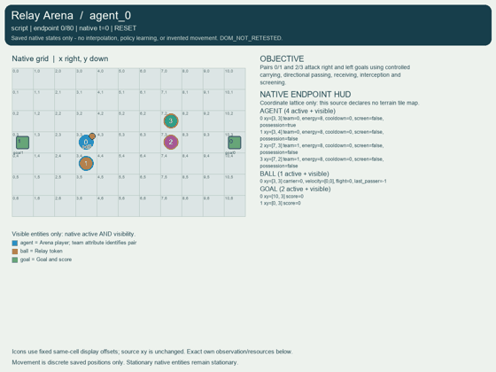
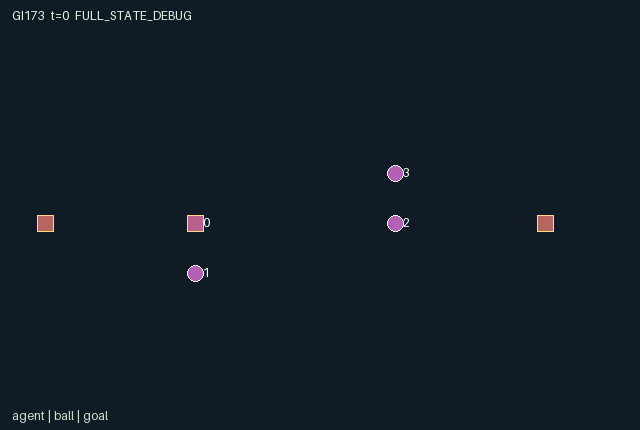

GI173 / SPATIAL
接力竞技场
持球增加移动能耗，传球要求队友站位并主动接球，对手可拦截、抢断或设置掩护。
Original saved demonstration
Recorded native state, often authored scripts or interventions; information scope and failures are preserved in the original provenance. This is a saved demonstration, not live browser play.

Release verification episode
Untrained uniform legal actions. Actual JAX state sampled along the full original episode; full-state debug camera. No human performance or learning claim.

Run this game
crucibles play --game 173
Start Python locally, then open the address printed by the terminal. Installation, multiplayer, takeover and keyboard controls →
Objective, rewards & ending
Exact task contract
{
"objective": "Pairs 0/1 and 2/3 attack right and left goals using controlled carrying, directional passing, receiving, interception and screening.",
"natural_termination": "First team to two goals; otherwise horizon 80. Winning goals have natural priority. Horizon goals do not place a kickoff.",
"interaction": "Carrying doubles movement energy. Passing requires teammate positioning and explicit catch; opponents can intercept or tackle. Screens alter enemy movement and protect a nearby carrier.",
"observation_access": "All positions, teams, energy, cooldowns, ball state, goals and events are public. Own identity is additional. No automatic teammate or receiver is provided."
}Declared per-step reward bounds: -10 to 10. Observability: fully_observable.
Rules
- Teams 0/1 and 2/3 compete on an 11 by 7 grid; team 0 attacks x=10 and team 1 x=0, at y=2,3,4.
- Entering old occupied player cells, swaps, contested destinations and player co-location are forbidden.
- Carrier walking costs two energy, free walking one. Catch costs one; pass and screen two. Rest restores two up to eight.
- Special actions require zero cooldown and start two ticks of cooldown. A directional pass travels one cell immediately and at most four cells total.
- Screens/movement precede tackles, passes, flight, catches and goals. Closest claimant wins; rotating role order breaks ties.
- A goal pays ten to scoring teammates and minus ten to opponents. Nonterminal kickoffs preserve clock, score, energy and cooldown.
Original mechanism document (historical status wording retained)
# Relay Arena
Status: AUTHORED_NOT_EXECUTED. Initial blind attempt_00; train split. Declared A/O/U/H = (4, 66, 11, 80).
Four controlled players form pairs {0,1} and {2,3} on an 11 by 7 grid. Team 0 attacks x=10 and team 1 x=0, with goal lanes y=2,3,4. Initial positions are (3,3),(3,4),(7,3),(7,2); player 0 carries the token. Reset is deterministic and ignores its key. No helper, receiver or opponent policy is embedded.
Free walking costs one energy and carrier walking two. Rest recovers two up to eight. Catch/tackle costs one; pass and screen cost two. Special actions require old cooldown zero, set cooldown two, and become available after two subsequent transitions. Attempts pay even when their mechanics fail. A catch stance is legal for a noncarrier without guaranteed success, so support is a policy decision.
Order is validation; screen declarations and desired movement; blocking; energy/cooldown; tackles; launches; loose flight; catches; goals; optional kickoff; clock and terminal evaluation. Moving into another player's old cell, swaps, mutually contested destinations, and destinations within one cell of an enemy screen are rejected. Players remain distinct. Blocked moves pay energy. A screen protects a teammate carrier within one cell against tackles in this transition. Thus a teammate action alters carrier safety and enemy feasible movement.
Tackles and catches require explicit action 5 within Manhattan distance one. Distance takes priority; ties use (role - t mod 4) mod 4. Tackles precede passes and can prevent launch. The carrier chooses a cardinal direction, not an oracle target. A launched ball advances immediately and can travel four steps total. A catch places the token on the receiver's native position and clears flight. An opposing catch relative to the last passer records interception. A loose stopped token still requires explicit pickup. Screens affect movement and tackles, not loose-ball catch priority.
Goals are evaluated after catches on actual token position. Entering the wrong goal is an own goal because boundary direction determines scoring. Each scoring teammate gets ten, opponents minus ten. First to two terminates naturally. Before the horizon, a nonwinning goal places the original formation and grants kickoff possession to the conceding side's player 2 or 0. Score, clock, energy and cooldown persist. Winning or horizon goals retain actual goal state. Raw-step never invokes reset. Horizon is 80 with natural-priority semantics.
All information relevant to gameplay is public in 66 columns. Native player and ball positions, possession, energy, cooldown, screen, flight and pass/interception/goal flags bind the scene. Prospective alternatives include passing to conserve carrier energy, dribbling when a receiver is marked, screening a vulnerable carrier and repositioning to intercept. None is asserted optimal or learned. Invariants stated from source: distinct in-bounds players, ball in bounds, at most one carrier, ball at carrier location when held, energy [0,8], cooldown [0,2], flight [0,4], and scores [0,2].
Terminal interface: a nonterminal raw transition advances scalar int32 t exactly once. Natural completion has priority at a coincident horizon. Truncated equals (t >= max_steps) and not terminated; done_all is their disjunction and equals episode_done. All agent dones share that value. A completed input preserves every state leaf, observation, clock and terminal cause, returning zero float32 reward. Legal masks retain action 0; inactive roles retain only action 0. Invalid IDs or masked actions deterministically become action 0. Raw-step never auto-resets.
Representation: fixed-shape int32/bool state, float32 observations and rewards. Small signed counters and IDs use int32. The supplied uint32 reset key is trusted trajectory provenance, not duplicated native state. Random traits, where present, use only that key. Subsequent transitions are deterministic. These are declared interface choices, not actual execution receipts.
Provenance and limits: AUTHORED_NOT_EXECUTED, initial blind attempt_00. The five supplied upstream references were read only as bytes for integrity checks, not semantically read or copied. No upstream implementation or license text is incorporated. Rules, native kernel and literal scripts are original to this authoring turn. Trusted static AST, manifest and scene data validators are the only checks performed. Candidate code was never imported or executed. JAX shape behavior, eager/jit/vmap parity, numerical bounds, causal effects, actual rendering, solvability, optimality, strategic richness, non-isomorphism, learning and meta-RL transfer remain unverified. No reward or success acceptance threshold is introduced.
Independent gpt-6.1-sol/high integration owns the JaxMARL adapter, sealed execution and real replay/animation. No CSD3, remote browser, model call, training, heldout evidence, prior source/result or unrestricted search was used. The final input freeze records all 22 actual-read inputs with paths, byte counts, hashes and use.
Playthroughs: every seed, prefix and suffix is an original literal prospective hypothesis. Source reasoning suggests legality, but no execution verified legality or outcomes. There was no seed search or numerical feedback. Each paired branch differs in exactly one scalar action; later actions are identical. Delay and intended differences explain a testable source dependency, not a measured effect or successful play.
## Literal source evidence
- candidate.py line 78: occupied = jnp.any(jnp.all(desired[:, None, :] == s['agent_pos'][None, :, :], axis=-1) & different, axis=1)
- candidate.py line 80: enemy_screen = jnp.any((jnp.sum(jnp.abs(desired[:, None, :] - s['agent_pos'][None, :, :]), axis=-1) <= 1) & screen[None, :] & (s['team'][:, None] != s['team'][None, :]), axis=1)
- candidate.py line 83: cost = walking.astype(jnp.int32) * (1 + holding.astype(jnp.int32)) + (a == 5).astype(jnp.int32) + 2 * (a >= 6).astype(jnp.int32)
- candidate.py line 90: protected = jnp.any(screen & (s['team'] == s['team'][holder]) & (jnp.sum(jnp.abs(p - p[holder]), axis=1) <= 1))
- candidate.py line 91: tackle = (old_carrier >= 0) & (a == 5) & (s['team'] != s['team'][holder]) & (distance <= 1) & ~protected
- candidate.py line 93: priority = (jnp.arange(4) - (s['t'] % 4)) % 4
- candidate.py line 99: launch = (old_carrier >= 0) & ~taken & (a[holder] >= 6) & (a[holder] <= 9)
- candidate.py line 111: receiver = (carrier < 0) & (a == 5) & (catch_distance <= 1)
- candidate.py line 122: goal = jnp.array([(ball[0] == 10) & lane, (ball[0] == 0) & lane], jnp.bool_)
- candidate.py line 125: kickoff = jnp.any(goal) & ~terminal & (s['t'] + 1 < self.max_steps)
- candidate.py line 147: reward = (10 * (own - opponent)).astype(jnp.float32)
- candidate.py line 151: n, reward = jax.lax.cond(state['episode_done'], lambda _: (state, jnp.zeros((4,), jnp.float32)), lambda _: self.advance(state, actions), operand=None)
## Method locations
- reset: candidate.py lines 12-42.
- legal_actions: candidate.py lines 44-55.
- observe: candidate.py lines 57-66.
- advance: candidate.py lines 68-148.
- raw_step: candidate.py lines 150-153.
Commands
Roles & abilities
agent_0 Team 0 player 0 attacks right
agent_1 Team 0 player 1 attacks right
agent_2 Team 1 player 2 attacks left
agent_3 Team 1 player 3 attacks left
Observation permissions
Training receives only the original observation rows. Role cameras use declared visibility; debug cameras are explicitly marked. Local benchmark records log debug exposure and role takeover history.
Exact observation layout
[
{
"slice": [
0,
4
],
"meaning": "Own player ID one-hot",
"visibility": "self"
},
{
"slice": [
4,
5
],
"meaning": "Clock",
"visibility": "public"
},
{
"slice": [
5,
13
],
"meaning": "All player xy",
"visibility": "public"
},
{
"slice": [
13,
17
],
"meaning": "All energy",
"visibility": "public"
},
{
"slice": [
17,
21
],
"meaning": "All cooldowns",
"visibility": "public"
},
{
"slice": [
21,
25
],
"meaning": "Team IDs",
"visibility": "public"
},
{
"slice": [
25,
29
],
"meaning": "Screen bits",
"visibility": "public"
},
{
"slice": [
29,
33
],
"meaning": "Possession bits",
"visibility": "public"
},
{
"slice": [
33,
35
],
"meaning": "Ball xy",
"visibility": "public"
},
{
"slice": [
35,
36
],
"meaning": "Carrier ID or -1",
"visibility": "public"
},
{
"slice": [
36,
38
],
"meaning": "Ball flight xy velocity",
"visibility": "public"
},
{
"slice": [
38,
39
],
"meaning": "Remaining flight",
"visibility": "public"
},
{
"slice": [
39,
40
],
"meaning": "Last passer while loose or -1",
"visibility": "public"
},
{
"slice": [
40,
44
],
"meaning": "Goal centers; lanes include y 2 through 4",
"visibility": "public"
},
{
"slice": [
44,
46
],
"meaning": "Team scores",
"visibility": "public"
},
{
"slice": [
46,
50
],
"meaning": "Pass events",
"visibility": "public"
},
{
"slice": [
50,
54
],
"meaning": "Catch events",
"visibility": "public"
},
{
"slice": [
54,
58
],
"meaning": "Interception events",
"visibility": "public"
},
{
"slice": [
58,
62
],
"meaning": "Tackle events",
"visibility": "public"
},
{
"slice": [
62,
64
],
"meaning": "Goal events",
"visibility": "public"
},
{
"slice": [
64,
65
],
"meaning": "Kickoff event",
"visibility": "public"
},
{
"slice": [
65,
66
],
"meaning": "Episode done",
"visibility": "public"
}
]Entity visibility & attributes
[
{
"id": "agent",
"kind": "agent",
"count": 4,
"position": [
"agent_pos"
],
"active": [
"agent_active"
],
"visibility": [
"agent_visible"
],
"attributes": [
{
"state_path": [
"team"
],
"meaning": "Public team ID",
"display": "category"
},
{
"state_path": [
"energy"
],
"meaning": "Energy reserve",
"display": "bar"
},
{
"state_path": [
"cooldown"
],
"meaning": "Special-action cooldown",
"display": "number"
},
{
"state_path": [
"screen"
],
"meaning": "Screen declared this transition",
"display": "flag"
},
{
"state_path": [
"possession"
],
"meaning": "Current token carrier",
"display": "flag"
}
]
},
{
"id": "ball",
"kind": "object",
"count": 1,
"position": [
"ball_pos"
],
"active": [
"ball_active"
],
"visibility": [
"ball_visible"
],
"attributes": [
{
"state_path": [
"carrier"
],
"meaning": "Carrier ID; -1 loose",
"display": "category"
},
{
"state_path": [
"velocity"
],
"meaning": "Current cardinal flight velocity",
"display": "direction"
},
{
"state_path": [
"flight"
],
"meaning": "Remaining flight steps",
"display": "number"
},
{
"state_path": [
"last_passer"
],
"meaning": "Last passer while loose; -1 otherwise",
"display": "category"
}
]
},
{
"id": "goal",
"kind": "landmark",
"count": 2,
"position": [
"goal_pos"
],
"active": [
"goal_active"
],
"visibility": [
"goal_visible"
],
"attributes": [
{
"state_path": [
"score"
],
"meaning": "Score of team attacking this goal",
"display": "number"
}
]
}
]Actual verification & provenance
Per-game execution receipt
{
"game": "gi173",
"status": "PASS",
"verification_revision": 2,
"source_sha256": "fd343e7d228d41dfd595cd135f86e7b9925e5a8c2dc08dd5b3d075f73e5c52cb",
"seed": 20261101,
"runtime": {
"jax": "0.4.38",
"numpy": "1.26.4",
"devices": [
"TFRT_CPU_0"
]
},
"dimensions": {
"num_agents": 4,
"observation_size": 66,
"num_actions": 11,
"max_steps": 80
},
"checks": {
"eager_reset": {
"status": "PASS",
"seconds": 0.6791141033172607
},
"observation_spaces_legal_masks": {
"status": "PASS",
"seconds": 1.0052878856658936
},
"eager_step": {
"status": "PASS",
"seconds": 0.5441203117370605
},
"jit_reset": {
"status": "PASS",
"seconds": 0.06406140327453613
},
"jit_step": {
"status": "PASS",
"seconds": 0.7054269313812256
},
"eager_jit_integer_parity_float_measurement": {
"status": "PASS",
"seconds": 0.0
},
"jit_vmap_reset": {
"status": "PASS",
"seconds": 0.08091044425964355
},
"jit_vmap_step": {
"status": "PASS",
"seconds": 0.7563011646270752
},
"outer_autoreset_api": {
"status": "PASS",
"seconds": 0.6802108287811279
},
"full_original_horizon_episode_and_render": {
"status": "PASS",
"seconds": 1.031782865524292
}
},
"human_scores": null,
"browser_controls": "PENDING",
"failures": [],
"elapsed_seconds": 6.3697686195373535,
"float_parity_max_abs": 0.0,
"numerical_parity": "EXACT",
"raw_terminal_absorbing": "PASS",
"terminal_outer_reset": "PASS",
"episode_steps": 80,
"scripted_random_returns": [
0.0,
0.0,
0.0,
0.0
],
"terminal": true,
"demo_information": "FULL_STATE_DEBUG",
"demo_frames": 28,
"render_roles_checked": 4
}Chromium control verification
{
"game": "gi173",
"status": "PASS",
"human_scores": null,
"engineering": true,
"checks": [
"catalog_selected_and_real_native_reset",
"keyboard_native_direction_command",
"dom_queue_and_native_step",
"second_participant_ownership_and_native_joint_step",
"all_roles_individually_controllable_no_role_cap",
"explicit_debug_camera",
"release_to_pure_ai_without_reset",
"close_session_preserves_log"
],
"ui_sha256": "96243f9de144b80b5e20a114330e2206bdcd58d3efc9c6f13bbc08b95cacc14d",
"keyboard_action_id": 1,
"seconds": 4.082274913787842
}Original identity and file hashes
{
"id": 173,
"key": "gi173",
"title": "接力竞技场",
"summary": "持球增加移动能耗，传球要求队友站位并主动接球，对手可拦截、抢断或设置掩护。",
"tags": [
"团队球赛",
"传球配合"
],
"family": "spatial",
"dimensions": {
"num_agents": 4,
"observation_size": 66,
"num_actions": 11,
"max_steps": 80
},
"source_sha256": "fd343e7d228d41dfd595cd135f86e7b9925e5a8c2dc08dd5b3d075f73e5c52cb",
"manifest_sha256": "e744c6d5f9cb04fa3101b341cba33f32eb2cbde774d6c851528dca5f9543b85c",
"files": [
{
"file": "candidate.py",
"sha256": "fd343e7d228d41dfd595cd135f86e7b9925e5a8c2dc08dd5b3d075f73e5c52cb",
"bytes": 9310,
"origin": "work/exp_2/game_incubator_v3/community_games222_225_visualization_root222_v1/native154_candidate/registry/v2/games/game-v3-00173/candidate.py"
},
{
"file": "manifest.json",
"sha256": "e744c6d5f9cb04fa3101b341cba33f32eb2cbde774d6c851528dca5f9543b85c",
"bytes": 13929,
"origin": "work/exp_2/game_incubator_v3/community_games222_225_visualization_root222_v1/native154_candidate/registry/v2/games/game-v3-00173/manifest.json"
},
{
"file": "scene.json",
"sha256": "bdf509a98b7a8195d567327325ce53f498a00cbdf3173e82934a4223531a6c60",
"bytes": 7623,
"origin": "work/exp_2/game_incubator_v3/community_games222_225_visualization_root222_v1/native154_candidate/registry/v2/games/game-v3-00173/scene.json"
},
{
"file": "mechanism.md",
"sha256": "46c82068da1b6ca7d189ff2f78915fc70d6db49c6012ba94b999d97dfe6c5728",
"bytes": 7203,
"origin": "work/exp_2/game_incubator_v3/sources/game-v3-00173/attempt_00/mechanism.md"
},
{
"file": "playthrough.json",
"sha256": "bdabc7be2180fedc785bab2e94334469c5d1ba6f30e19c35596ab6e1b1ae07bb",
"bytes": 3014,
"origin": "work/exp_2/game_incubator_v3/sources/game-v3-00173/attempt_00/playthrough.json"
}
],
"original_status": "NATIVE154_REFERENCE",
"original_saved_replay": true,
"release_validation": "PASS",
"human_scores": null,
"browser_validation": "PASS"
}